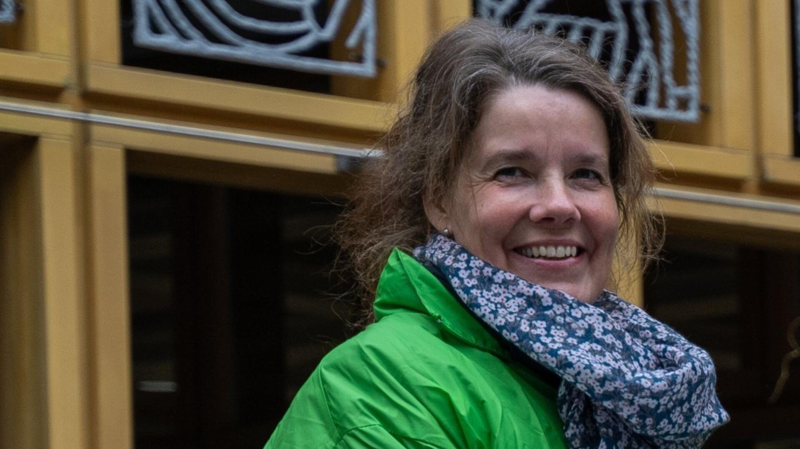

2024 - 2026 | Verkoper
HEMA — Winkel

Focus op hybride app-ontwikkeling en IoT-vraagstukken
Samen met mijn partner en dochter woon ik al vele jaren met plezier in het landelijke Hof van Twente.
Na het behalen van mijn bachelor heb ik ervaring opgedaan in de ambtelijke, politiek-bestuurlijke omgeving en in het onderwijs. Ik heb als consulent en projectmedewerker gewerkt en ben als zelfstandig loopbaanadviseur en bewindvoerder werkzaam geweest.
Als hobby ben ik begonnen met het maken van apps. Dat is uitgegroeid tot een serieus loopbaanpad dat ik goed kan combineren met mantelzorgtaken.
Naar bovenNaam: Verone de Vries
Telefoonnummer: 06 - 13 06 34 29
E-mailadres: veronedevries@gmail.com
HEMA — Winkel
ReggelandBewind — Eigenaar
Viverus — Eigenaar
SWB Groep Hengelo — Afdelingen Directie en Fitis
Gemeente Hengelo — Afdelingen Sociale Zaken en Werk
Gemeente Almelo — Afdeling Onderwijs
Arbeidsvoorziening — Afdelingen Arbeidsintegratie, Arbeidsbureau, CBB
NHA
Universiteit Utrecht
AMA - Saxion Deventer
SA - Hogeschool Enschede
Twickelcollege Hengelo